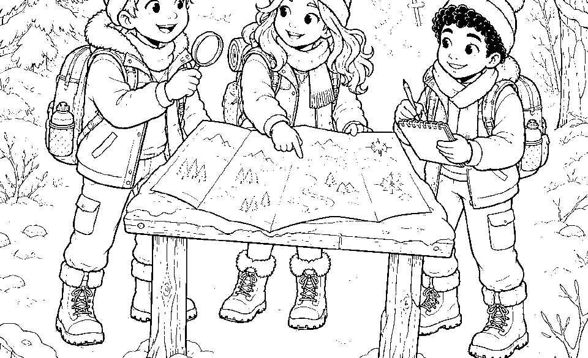
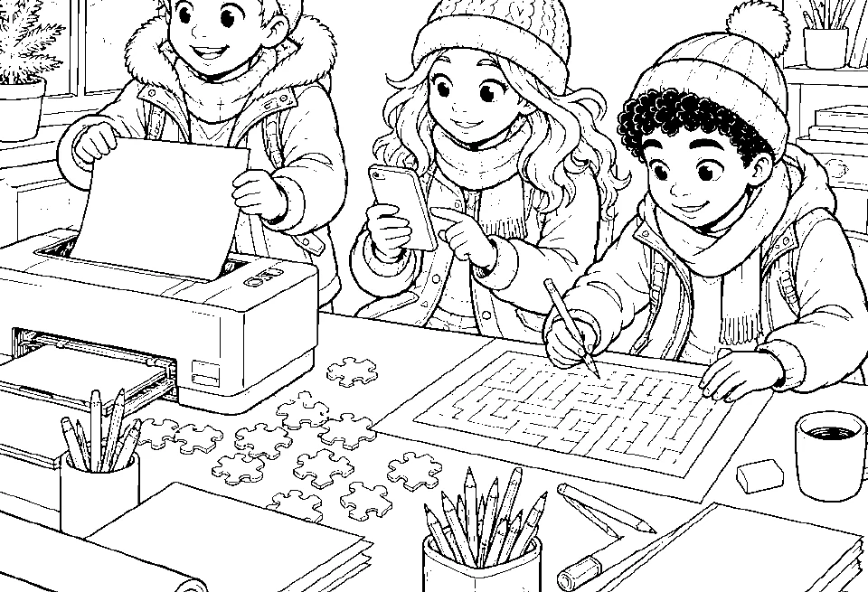

Spur 1 · Aufwärmen
Die richtige Spur
Untersuche den Fundort und wähle die passende Spur.
Die Winterdetektive brauchen dich
Löse sechs neue Zusatzrätsel, sammle die Fundbuchstaben und knacke das Winterwort. Dein Fortschritt bleibt auf diesem Gerät gespeichert.
Kein Konto · keine Werbung · offline spielbar

Folge der Karte
Beginne bei Spur 1. Jede gelöste Aufgabe öffnet den nächsten Abschnitt.

Spur 1 · Aufwärmen
Untersuche den Fundort und wähle die passende Spur.

Dein Spurenprotokoll
Löse die erste Spur, um den ersten Buchstaben einzutragen.
Winterdetektiv-Zentrale
Diese Urkunde bestätigt, dass
alle sechs Zusatzspuren gelöst und das Winterwort WINTER gefunden hat.
Gratis Winter-Rätselstudio · Bonusblatt 1
Die Winterdetektive haben drei neue Hinweise gefunden. Löse alle Aufgaben und trage deine Antworten ein.
A = 1, B = 2, C = 3 … Z = 26
19 – 3 – 8 – 14 – 5 – 5 Lösung: __________________________________Ordne alle neun Buchstaben zu einem Winterwort.
F · L · O · C · K · E · E · I · S Lösung: __________________________________Setze die Reihe mit zwei Zahlen fort.
4 · 8 · 12 · 16 · ____ · ____ Regel: ___________________________________Gratis Winter-Rätselstudio · Lösungen
Alles richtig? Dann zeichne neben jede Lösung eine kleine Schneeflocke.
Für Erwachsene
Die App speichert Fortschritt und Namen ausschließlich lokal im Browser. Über „Spielstand“ lässt sich ein Sicherungscode exportieren oder auf einem anderen Gerät wieder einlesen.